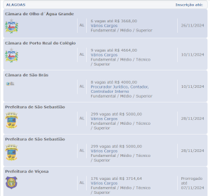

Concursos Inscritos
Concurso da Prefeitura de Rio Largo
O concurso seria realizado no dia 22 de setembro, mas foi suspenso por decisão judicial, na sexta-feira (20), após o Ministério Público Estadual (MP-AL) apontar irregularidades no edital. No sábado (21), véspera das provas, a Justiça derrubou a liminar e autorizou a realização do certame, mas a prefeitura decidiu manter a suspensão por decisão administrativa.
Novas datas
Novo cronograma
19/11/2024 - Divulgação da consulta aos locais de provas
24/11/2024 - Aplicação das provas objetivas
19/12/2024 - Divulgação dos gabaritos oficiais
07/01/2025 - Publicação dos Resultados Finais, Convocação para os Cursos de Formação e Homologação Parcial do Concurso Público – exceto para os cargos de Agente Comunitário da Saúde e Guarda Municipal
Concurso dos Correios
Os requisitos e as atribuições do cargo são os estabelecidos a seguir:
Cargo: Agente de Correios – CARTEIRO. Requisitos: Certificado, devidamente registrado, de conclusão de curso de ensino médio, fornecido por instituição educacional, reconhecido pelo Ministério da Educação. Atribuição Comum: 1. Realizar as atividades pertinentes ao cargo de Agente de Correios para a consecução de sua missão. 2. Utilizar instrumentos, equipamentos e sistemas para atender os padrões de qualidade, produtividade, segurança e exigências tecnológicas inerentes ao cargo de Agente de Correios. 3. Cumprir as metas estabelecidas em seu plano de trabalho contribuindo para o resultado de sua Unidade, visando atender o plano de metas da Empresa. 4. Executar os procedimentos definidos na padronização dos processos produtivos, seguindo as normas da ECT para atender os padrões de qualidade, produtividade e plano estratégico da Empresa.
Realização - Prova Objetiva 15/12/2024
Inscrições abertas em Alagoas
Estão abertas 984 vagas em concursos públicos em Alagoas, com salários de até R$ 8 mil. Há oportunidades em Maceió e no interior.